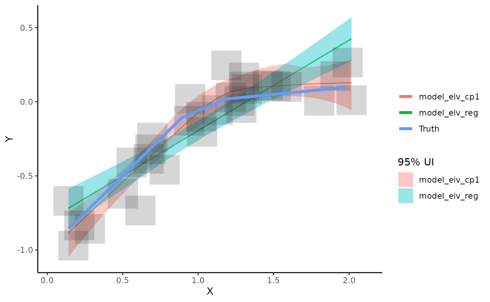

Introduction to EIVmodels
eivmodels.RmdThe goal of EIVmodels is to fit models accounting for measurement error.
Example - Simple Linear Regression
This package provides options to simulate data from different types of models where there is measurement error in both the x and y variable. We’ll start by simulating some data from a linear regression model.
dat <- sim_reg(n_sim = 10,
alpha = 0,
beta = 1,
x_err = 0.1)
dat## # A tibble: 10 × 6
## x x_err y y_err true_line true_x
## <dbl> <dbl> <dbl> <dbl> <dbl> <dbl>
## 1 0.353 0.1 0.273 0.1 0.450 0.450
## 2 1.60 0.1 1.60 0.1 1.57 1.57
## 3 1.85 0.1 1.87 0.1 1.76 1.76
## 4 0.549 0.1 0.427 0.1 0.514 0.514
## 5 1.60 0.1 1.44 0.1 1.56 1.56
## 6 1.21 0.1 1.24 0.1 1.22 1.22
## 7 0.0384 0.1 0.223 0.1 0.220 0.220
## 8 1.11 0.1 1.24 0.1 1.23 1.23
## 9 0.545 0.1 0.588 0.1 0.555 0.555
## 10 0.322 0.1 0.0721 0.1 0.0562 0.0562Next we’ll plot the simulated data and we’ll add the true regression line to the plot by adding the argument add_truth = TRUE to the plot_dat() function.
plot_dat(dat,
add_truth = TRUE)
Now we’ll fit the errors-in-variables simple linear regression model to the data and see how close we get to estimating the true data generating process. We’ll start by creating a model object and specifying the argument model = "model_eiv_reg". You’ll see some messages and a progress bar pop up as the JAGS model starts to run.
mod_eiv_reg <- run_mod(dat,
model = "model_eiv_reg")## module glm loaded## Compiling model graph
## Resolving undeclared variables
## Allocating nodes
## Graph information:
## Observed stochastic nodes: 20
## Unobserved stochastic nodes: 13
## Total graph size: 237
##
## Initializing modelNow we’ll plot the model-based estimates with uncertainty. We’ll overlay the true line as a comparison.
plot_res(mod_eiv_reg,
add_truth = TRUE)
To access the data that created this plot, use:
mod_reg_res <- par_est(mod = mod_eiv_reg)
mod_reg_res$pred_res## # A tibble: 50 × 4
## x pred_y lwr_95 upr_95
## <dbl> <dbl> <dbl> <dbl>
## 1 0.0384 0.0195 -0.207 0.232
## 2 0.0754 0.0584 -0.162 0.264
## 3 0.112 0.0971 -0.116 0.296
## 4 0.149 0.136 -0.0715 0.328
## 5 0.186 0.174 -0.0254 0.360
## 6 0.223 0.213 0.0205 0.392
## 7 0.261 0.251 0.0654 0.424
## 8 0.298 0.290 0.111 0.459
## 9 0.335 0.329 0.155 0.491
## 10 0.372 0.367 0.200 0.525
## # … with 40 more rowsTo access a summary of the parameter estimates, use:
mod_reg_res$par_summary## # A tibble: 3 × 7
## .variable .value .lower .upper .width .point .interval
## <chr> <dbl> <dbl> <dbl> <dbl> <chr> <chr>
## 1 alpha -0.0203 -0.255 0.200 0.95 median qi
## 2 beta 1.04 0.835 1.26 0.95 median qi
## 3 sigma 0.0436 0.00192 0.205 0.95 median qiExample - Change-Point Linear Regression
We can simulate data from a change-point regression model. In this case there will be a different trend (slope) before and after the change point (specified with beta = c(1,0.1)). The change from a slope of 1 to a slope of 0.1 will happen at x = 1.
## # A tibble: 30 × 6
## x x_err y y_err true_line true_x
## <dbl> <dbl> <dbl> <dbl> <dbl> <dbl>
## 1 0.384 0.1 -0.551 0.1 -0.389 0.611
## 2 1.61 0.1 0.234 0.1 0.0552 1.55
## 3 1.26 0.1 0.0448 0.1 0.0247 1.25
## 4 0.828 0.1 -0.182 0.1 -0.248 0.752
## 5 0.149 0.1 -0.870 0.1 -0.942 0.0581
## 6 0.404 0.1 -0.655 0.1 -0.702 0.298
## 7 1.29 0.1 -0.0511 0.1 0.00494 1.05
## 8 1.81 0.1 0.130 0.1 0.0852 1.85
## 9 1.14 0.1 -0.0470 0.1 0.00683 1.07
## 10 0.189 0.1 -1.13 0.1 -0.964 0.0360
## # … with 20 more rowsNext we’ll plot the simulated data and we’ll add the true regression line to the plot by adding the argument add_truth = TRUE to the plot_dat() function.
plot_dat(dat,
add_truth = TRUE)
We’ll fit a EIV-linear regression model and an EIV-CP regression model (specified with the argument `model = “model_eiv_cp1”) to these data.
mod_eiv_lr <- run_mod(dat,
model = "model_eiv_reg")## Compiling model graph
## Resolving undeclared variables
## Allocating nodes
## Graph information:
## Observed stochastic nodes: 60
## Unobserved stochastic nodes: 33
## Total graph size: 377
##
## Initializing model
mod_eiv_cp <- run_mod(dat,
model = "model_eiv_cp1")## Compiling model graph
## Resolving undeclared variables
## Allocating nodes
## Graph information:
## Observed stochastic nodes: 60
## Unobserved stochastic nodes: 35
## Total graph size: 701
##
## Initializing modelWe’ll comapare both methods
plot_res(mod_eiv_lr,
mod_eiv_cp,
add_truth = TRUE)
To access the parameter summaries for both model we need to run the par_est function
mod_lr_res <- par_est(mod = mod_eiv_reg)
mod_lr_res$par_summary## # A tibble: 3 × 7
## .variable .value .lower .upper .width .point .interval
## <chr> <dbl> <dbl> <dbl> <dbl> <chr> <chr>
## 1 alpha -0.0203 -0.255 0.200 0.95 median qi
## 2 beta 1.04 0.835 1.26 0.95 median qi
## 3 sigma 0.0436 0.00192 0.205 0.95 median qi
mod_cp_res <- par_est(mod = mod_eiv_cp)
mod_cp_res$par_summary## # A tibble: 5 × 8
## .variable `1:2` .value .lower .upper .width .point .interval
## <chr> <int> <dbl> <dbl> <dbl> <dbl> <chr> <chr>
## 1 alpha NA -0.0971 -0.336 0.0958 0.95 median qi
## 2 beta 1 1.16 0.747 1.86 0.95 median qi
## 3 beta 2 0.167 -0.151 0.399 0.95 median qi
## 4 cp NA 0.810 0.529 1.23 0.95 median qi
## 5 sigma NA 0.0175 0.000815 0.0674 0.95 median qi